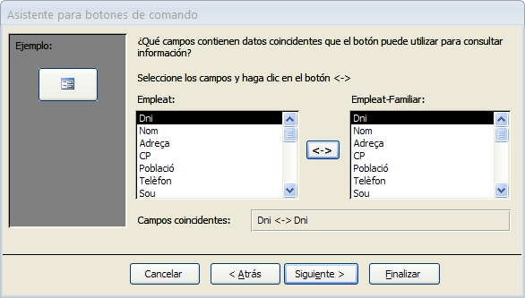

2.5 Resum d'accions
A continuació farem un resum de les accions més comuns que es poden incorporar en les macros d'Access. Quan utilitzem l'assistent en inserir un botó, quasi totes les accions que ens proposa l'assistent estaran en aquesta llista. Les agruparem segons la funció:
Obrir i tancar Objectes
|
Acció
|
Comentari
|
|
| AbrirTabla |
|
|
| AbrirConsulta | ||
| AbrirFormulario | ||
| AbrirInforme | ||
| AbrirModuloVisualBasic | ||
| CerrarVentana | Per a tancar qualsevol objecte. Si no s'especifica quin, es tancarà l'objecte actiu | |
Nota
Si no es veu alguna d'aquestes accions de macro (com per exemple AbrirModuloVisualBasic), activeu el botó Mostrar todas las acciones
Exercici 2.12
Col·locar dos botons en "Menú Principal" per a obrir els dos informes existents en la Base de Dades Empresa. Feu-lo per mig de una macro independent anomenada Obrir Informes que contindrà dos submacros: Obrir Informe i Obrir Etiquetes.
Els podeu obrir en "Vista Preliminar", per veure millor com queda l'informe.
Col·locar un altre botó per a obrir el gràfic dels projectes: Projectes - Gràfic d'hores. Feu-lo per mig d'una macro independent anomenada Obrir Grafic. La millor manera per obrir el gràfic és amb la vista "GráficoDinámico".
Exercici 2.13 (voluntari)
Modifiqueu la consulta "13: Augment de Sou", per generalitzar-la i que demane per teclat el departament al qual se li augmenta el sou, i el percentatge. És a dir, el departament i l'augment (del qual hem d'introduir una quantitat numèrica, que serà agafada com un percentatge) seran dos paràmetres. Recordeu que els paràmetres es posen entre claudàtors ([ ]) i no han de coincidir amb cap camp de les taules de la consulta. D'aquesta manera, Access ens demanarà un valor per a aquestos paràmetres.
Posteriorment col·loqueu un altre botó en "Menú Principal" per a obrir aquesta consulta (per mig d'una macro incrustada).
Exercici 2.14
Haurem de triar la primera opció, equivalent a aplicar un filtre. La condició d'aquest filtre és que ha de coincidir el Dni, i per a aconseguir-ho triem els dos Dni de les dues columnes i apretem al botó <->:

En Access 2007 no funcionaria com esperàvem, i en compte de visualitzar-se en el formulari Empleat-Familiar únicament l'empleat que teníem en el formulari Empleat, es veurien tots. Es pot arreglar tenint en comte el següent exercici.
Exercici 2.15
Ara ho farem el mateix procés per mig d'una macro independent creada per nosaltres, per a ser més conscient del que fem.
Col·loqueu un altre botó, aquesta vegada sense l'assistent, per anar als Projectes en els quals treballa aquest empleat. Generarem una nova macro, anomenada "Projectes d'un empleat", en la qual obrirem el formulari "Treballa" però posant la següent condició en "Condicion WHERE"
dni=Formularios.Empleat.dni
D'aquesta manera obliguem a que el camp Dni de Treballa coincidisca amb el contingut del control dni situat en el formulari "Empleat".
Segurament haurà funcionat bé. I hi ha una diferència en el moment de crear la condició. En la macro incrustada en el botó d'anar als familiars, tindrem en la Condicion WHERE :
"[Dni]=" & "'" & [Dni] & "'"
Açò podria ser ambigu, i de fet en Access 2007 no funcionaria, ja que Dni podria no saber a qui es refereix, si al control del formulari Empleat-Familiar o al control del formulari Empleat. En canvi en la nostra macro (creada per nosaltres) no hem deixat lloc a l'ambigüitat, i en el cas d'Access 2007 seria la manera de solucionar el problema:
dni=Formularios.Empleat.dni
Execucions i parades
| CancelarEvento | Cancel·la l'event que ha provocar aquesta macro. Si és abans d'actulitzar, no l'actualitza, si és abans d'eixir no eixirà, ... |
| DetenerMacro | Finalitza l'execució de la present macro. |
| DetenerTodasMacros | Finalitza la present macro i totes aquelles a les quals pot cridar. |
| EjecutarSQL | Executa una sentència SQL de manipulació (inserció, esborrat, ...) |
| EjecutarCódigo | Executa un procediment o funció de VBA (Visual Basic for Applications). |
| EjecutarMacro | Executa una altra macro. |
| EjecutarAplicación | Executa un programa executable extern a Access. |
| EjecutarComandoDeMenú | Executa una de les accions definides en els menús estàndar d'Access |
| SalirDeAccess | Tanca Access |
Exercici 2.16
Canvieu la macro "Tancar", i en compte de l'acció "Cerrar", poseu "Salir". Després de comprovar l'efecte, torneu a deixar-la com estava. Però observeu com serà molt útil en aplicacions completes destinades a usuaris no experts.
Recerca de dades i desplaçament
| IrRegistro | Es desplaça a un determinat registre. Es pot triar: anar al primer, anar a l'anterior, anar al següent, anar a l'últim o anar a un registre determinat. |
| BuscarRegistro | Buscar un registre que acomplesca unes condicions. |
| BuscarRegistroSiguiente | Busca el següent que acompleix les condicions. |
Exercici 2.17
Crear dos botons de navegació per al formulari "Projecte": un per anar al següent registre ( > ) i un altre per anar a l'anterior ( < ). Les dues macros associades, que poden ser incrustades, utilitzaran l'acció "IrARegistro".
No aniran del tot bé, ja que al final i al principi, si anem més enllà dels registres que tenim, pot donar problemes. Però de moment tenim suficient.
Altres
| DefinirPropiedad | Canvia el valor d'una propietat d'un control d'un formulari o informe. Pot servir per exemple per a fer visible un control, posant a -1 (vertader) la propietat Visible. |
| EstablecerValor | Canvia el valor de qualsevol control o qualsevol propietat. També pot servir per a fer visible un control: en elemento Boton1.Visible; i en expresión True. |
| NuevaConsulta | Actualitza les dades d'un control que depèn d'una consulta (un quadre combinat, un subformulari, ...) |
| EnviarTeclas | Guarda en la memòria intermitja de teclat les tecles especificades. |
| IrAControl | Activa el control especificat. |
| MostrarCursorDeRelojDeArena | Mostra el rellotge d'arena mentre es va executant la macro. |
| MaximizarVentana, MinimizarVentana | Maximitza i minimitza, respectivament, la finestra activa. |
| RestaurarVentana | Restaura una finestra maximitzada o minimitzada a la grandària anterior. |
| Bip | Emet un so. |
| CuadroDeMensaje | Presenta un missatge. |
| Imprimir | Imprimeix l'objecte |
| ExportarConFormato | Trau l'eixida cap a un fitxer Excel, Word o de text. |
| ImportarExportarDatos | Importa o exporta dades des de o cap a B.D. externes d'altres tipus. |
Recordeu que si no es veu alguna de les accions abans esmentades, és perquè no està activat el botó Mostrar todas las acciones
Exercici 2.18 (voluntari)
Posar dos botons en el formulari "Botons" anomenats Boto1 i Boto2, de manera que quan s'aprete el primer es visualitze el segon i es deixe de visualitzar el primer, i a l'inrevés. Heu de ser conscients que s'ha de fer més d'una acció: quan punxem en un botó, aquest és l'actiu, i si l'intentem fer-lo invisible ens donarà un error perquè no es pot deixar de visualitzar un control que "tiene el enfoque" Per tant les accions seran en aquest ordre:
- Fer visible l'altre Botó (propietat Visible de l'altre botó a True)
- Passar el control a l'altre botó (IrAControl)
- Per últim fer invisible aquest botó (propietat Visible d'aquest botó a False)
Llicenciat sota la Llicència Creative Commons Reconeixement NoComercial SenseObraDerivada 2.5